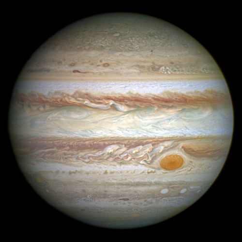
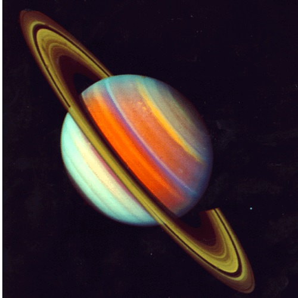
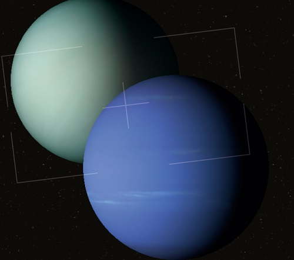

Jupiter
Jupiter is the fifth planet from the Sun and the largest in the Solar System. It is a gas giant with a mass one-thousandth that of the Sun, but two-and-a-half times that of all the other planets in the Solar System combined. Jupiter is one of the brightest objects visible to the naked eye in the night sky, and has been known to ancient civilizations since before recorded history.
Saturn
Saturn is the sixth planet from the Sun and the second-largest in the Solar System, after Jupiter. It is a gas giant with an average radius of about nine times that of Earth. It only has one-eighth the average density of Earth; however, with its larger volume, Saturn is over 95 times more massive. Saturn is named after the Roman god of wealth and agriculture; its astronomical symbol (♄) represents the god's sickle.
Uranus and Neptune
Uranus and Neptune are the two most distant known major planets in our solar system. Both are now considered ice giants. Both are fundamentally different from the larger gas giants Jupiter and Saturn, and from smaller rocky worlds like Earth. Uranus and Neptune have similar masses and internal compositions. Their outer atmospheres are composed of hydrogen, helium and methane, while their mantles are a combination of water, ammonia and methane ices, and their cores are a mix of rock and ice.
By mass gas planets in descending order:
- Jupiter - 318m Earth
- Saturn - 95m Earth
- Neptune - 17m Earth
- Uranus - 14m Earth
Planets comparison
| Planet | Distance from Sun | Density |
|---|---|---|
| Jupiter | 5.20 AU | 1.33g/cm3 |
| Saturn | 9.54 AU | 0.71g/cm3 |
| Uranus | 19.2 AU | 1.24g/cm3 |